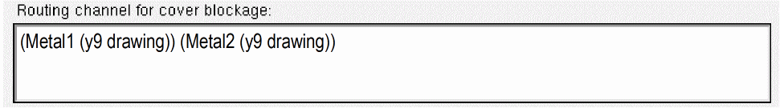

Running step Abstract Form
运行步骤抽象表单
The Running step Abstract form allows you to modify only the options that are relevant to the abstract steps about to be run.
运行步骤 Abstract 表单允许你仅修改与即将运行的抽象步骤相关的选项。
The form contains the following tabs.
此表单包含以下选项卡。
Adjust
调整
The following table describes the fields available on the Adjust tab of the Running Step Abstract form.
下表说明运行步骤 Abstract 表单 Adjust 选项卡上可用的字段。
Blockage
阻挡
The following table describes the fields available on the Blockage tab of the Running step Abstract form.
下表说明运行步骤 Abstract 表单 Blockage 选项卡上可用的字段。
|
Field 字段 |
Description 说明 |
|---|---|
|
This section is used to specify how blockages are to be modeled in the abstract. 此部分用于指定在抽象中如何建模阻挡。 |
|
|
Specifies the layers on which you want to create blockages. You can do one of the following: 指定要创建阻挡的层。可执行以下操作之一：
If you do not create a table entry for a particular layer, Abstract Generator will not create any blockages on that layer in the final abstract. 如果未在表中为某一层创建条目，Abstract Generator 在最终抽象中不会在该层创建任何阻挡。 |
|
|
Lets you enter the geometry specification for the layers on which you want the blockage to be implemented. 用于为要实施阻挡的层输入几何规格。 |
|
|
Lets you specify the type of blockage you want to create on the specified layer: Cover, Detailed, or Shrink. The default is Detailed for the Core bin and Cover for the Block bin. 用于指定在所选层上要创建的阻挡类型：Cover、Detailed 或 Shrink。默认值：Core bin 为 Detailed，Block bin 为 Cover。
Use the 可使用
|
|
|
Enables Abstract Generator to cut the blockage around pins for allowing a router to access the pins. See Impact of Cutout and Spacing Options on Blockage Types. 使 Abstract Generator 在引脚周围对阻挡进行开窗，以便路由器能够访问引脚。另见 Impact of Cutout and Spacing Options on Blockage Types。 |
|
|
Enables Abstract Generator to create a boundary blockage around a block such that the top-level routes are maximum possible distance away from the block. The boundary blockage is interspersed between pins along the block boundary. You can use this option when you want to do routing for cells even when their detailed layout is still not complete but the pin positions and boundary have been finalized. 使 Abstract Generator 在块周围创建边界阻挡，使顶层布线尽可能远离该块。该边界阻挡会沿块边界在引脚之间分布。当详细版图尚未完成但引脚位置与边界已确定时，可使用此选项先进行布线。 This option works only for Cover blockages and is not applicable for Detailed and Shrink blockages. See Impact of Cutout and Spacing Options on Blockage Types. 该选项仅对 Cover 阻挡有效，不适用于 Detailed 与 Shrink 阻挡。另见 Impact of Cutout and Spacing Options on Blockage Types。 The Max Space option is effective only when the Pin Cutout option is selected. Further, when the Max Space option is selected along with the Pin Cutout option, the Corridor Cut option is ineffective. 仅当选择了 Pin Cutout 时，Max Space 才有效。此外，当 Max Space 与 Pin Cutout 同时选中时，Corridor Cut 将不起作用。 |
|
|
Enables Abstract Generator to create corridor paths that can allow routers to access internal pins. This option, when selected, first determines the existence of straight line paths that can route 使 Abstract Generator 创建走廊通道（corridor paths），以便路由器访问内部引脚。选中后，会先判断是否存在可将 See Impact of Cutout and Spacing Options on Blockage Types. 另见 Impact of Cutout and Spacing Options on Blockage Types。 You can use this option only when the Pin Cutout option is selected. 仅当选择了 Pin Cutout 时才能使用此选项。 |
|
|
Specifies the distance to cut around pins on the same layer. If set as 指定在同一层上围绕引脚开窗的距离。若设置为 By default, Abstract Generator cuts out enough space to enable a via to be dropped from the layer above anywhere onto the pin without violation. This setting overrides the default size of the cut-out made around pins. The default is still used for any unlisted blockage layers. 默认情况下，Abstract Generator 会开窗到足够大小，使得可以从上层在不违例的情况下在引脚任意位置放置过孔。该设置会覆盖围绕引脚开窗的默认尺寸；对于未列出的阻挡层仍使用默认值。 |
|
|
Specifies the distance to cut around pins on the layer below. By default, Abstract Generator cuts a window from a blockage layer that overlaps pins on the layer below, leaving enough space to enable a via to be dropped from the blockage layer anywhere onto the pin without violation. For example, if you are creating cover blockages for metal 4, then pin cutouts are created on metal 4 blockages for pins in both, metal 4 and metal 3. 指定在下层引脚周围开窗的距离。默认情况下，Abstract Generator 会在阻挡层上对与下层引脚重叠的区域进行开窗，并预留足够空间，使得可从阻挡层在不违例的情况下在引脚任意位置放置过孔。例如，为 metal 4 创建 cover 阻挡时，会在 metal 4 阻挡上对 metal 4 与 metal 3 两层上的引脚都创建开窗。 By default, the Cut Below field does not have any value. However, you can specify any value in this field. If you specify the value 0, then pin cutouts are created only on the current layer. In the above example, pin cutouts will only be created on metal 4. See Automatic Pin Stretching. 默认情况下，Cut Below 字段为空；但你可以在该字段中指定任意值。若指定为 0，则只在当前层创建引脚开窗。以上例中，将只在 metal 4 上创建开窗。另见 Automatic Pin Stretching。 |
|
|
Specifies a minimum distance (in microns) between blockages. Blockages separated by a distance less than or equal to the specified distance are merged, irrespective of whether Pin Cutout is ON or OFF. Values entered in this field are considered only if you select to generate Shrink blockages. 指定阻挡之间的最小距离（单位：微米）。当两处阻挡之间的距离小于或等于该距离时，会被合并，不论 Pin Cutout 是否开启。仅当选择生成 Shrink 阻挡时才会考虑此字段的数值。 |
|
|
Specifies the minimum number of tracks between blockages. Blockages separated by a distance less than or equal to the specified number of tracks are merged. Values entered in this field are considered only if you select to create Shrink blockage. 指定阻挡之间的最小轨道数。若两处阻挡之间的距离小于或等于该轨道数对应的距离，则会被合并。仅当选择创建 Shrink 阻挡时才会考虑此字段的数值。 The distance, D, required to accommodate a given number of tracks, n, is calculated (in microns) using the following formula: 给定轨道数 n 所需的距离 D（单位：微米）按下式计算：
If you specify both Shrink Track and Shrink Dist, the values are added and blockages separated by a distance less than or equal to the total distance are merged. If you do not supply a distance, Abstract Generator uses a default value of 如果同时指定了 Shrink Track 与 Shrink Dist，两者数值会相加；当阻挡间距小于或等于该总距离时将被合并。如果未提供距离，Abstract Generator 使用默认值 If values are entered for layers for which Shrink blockage is not being generated, the values are ignored. 如果为未生成 Shrink 阻挡的层输入了数值，这些数值会被忽略。 |
|
|
Specifies the minimum distance between a Cover blockage and the cell boundary. The default value of this option is 指定 Cover 阻挡与单元边界之间的最小距离。该选项默认值为 |
|
|
Controls the size of the window cut into a blockage around a pin. This option is selected by default. When this option is selected, Abstract Generator cuts a window large enough for a via to be dropped to that pin. If you do not select this option, Abstract Generator cuts a window around the pin based purely on the range-based spacing rule for the pin width. 控制围绕引脚在阻挡中开窗的尺寸。该选项默认选中；选中后，Abstract Generator 会开窗到足够大，以便可以向该引脚放置过孔而不违例。若不选中，则仅基于引脚宽度的分段（range-based）间距规则来确定开窗大小。
Alternatively, use the 或者使用
Abstract Generator uses the Abstract Generator 对金属层与过孔层均使用 This option applies only to the layer on which the pin and blockage exist. However, for a given blockage layer, Abstract Generator additionally cuts around pins on the layer below, again leaving space for a via to be dropped without violation. This option has no effect on the size of the cut-out around pins on the layer below. 该选项仅作用于引脚与阻挡所在层。然而对于给定的阻挡层，Abstract Generator 还会在下层引脚周围额外开窗，同样预留足够空间以便放置过孔而不违例。该选项不会影响对下层引脚开窗的尺寸。
If you want the cut-outs on all layers to be based only on the pin width, set the Cut Below value to 如果希望所有层的开窗仅基于引脚宽度，在 Layer Assignment for Blockages 表中将对应阻挡层的 Cut Below 设置为 |
|
|
Creates a routing channel when generating a cover blockage. Consider an example below: 在生成 cover 阻挡时创建布线通道。请参考下例：  Here, Metal1 refers to layer through which a routing obstruction needs to be cut. (y9 drawing) is the layer-purpose pair that indicates the shape of the routing channel. 其中，Metal1 表示需要在其上切出布线阻挡的层；(y9 drawing) 为层-用途对，用于指示布线通道的形状。
You can use the 你可以使用 示例
Layers 层 |
Density
密度
The following table describes the fields available on the Density tab of the Running step Abstract form.
下表说明运行步骤 Abstract 表单 Density 选项卡上可用的字段。
|
Field 字段 |
Description 说明 |
|---|---|
|
Specifies that metal density information is to be generated for the selected cell(s). When this option is selected, Abstract Generator generates the fill blockages that are specified in the DEF file. During LEF generation, these fill blockages are exported out as density. By default, this option on the Density tab is enabled. The other options become active only when the Calculate metal density option is enabled. 指定为所选单元生成金属密度信息。选中后，Abstract Generator 会生成 DEF 文件中指定的填充阻挡（fill blockages）；在生成 LEF 时，这些填充阻挡会以密度信息形式导出。默认情况下，Density 选项卡中的该选项处于启用状态。其他选项仅在启用 Calculate metal density 后才会激活。 |
|
|
Use layer assignment for signal extraction, Use layer assignment for antenna extraction, Use layer assignment for power extraction |
Lets you specify metal layers and their geometry specifications for metal density calculation. You can use the same metal layers and their corresponding geometry specifications as you would have specified for signal nets, power nets, or antenna data extraction in the Extract step. To do this, select one of the following options: 用于为金属密度计算指定金属层及其几何规格。你可以复用 Extract 步骤中为信号网络、电源网络或天线数据提取所指定的金属层与对应几何规格。为此，请选择以下选项之一：
These options are mutually exclusive and selecting one disables the other two options. Only metal layers specified in the selected table will be considered for metal density calculation. 这些选项互斥：选择其中一个会禁用另外两个。仅会使用所选表中指定的金属层进行金属密度计算。 |
|
This section provides options to select different set of geometry specifications for metal layers. To use the geometry specifications from this table, ensure that none of the three layer assignment options is selected. You can turn off these options individually. 此部分提供选项，用于为金属层选择不同的一组几何规格。若要使用本表中的几何规格，请确保未选中上述三个“使用层分配”的选项；你可以分别关闭这些选项。 If you select to use a layer assignment table for density calculations from a different tab, you can still use the Width and Height columns of the Layer Assignment for Metal Density Regions table on the Density tab. In this case, though the geometry specifications in the Layer Assignment for Metal Density Regions table will not be considered for metal density calculation but you need to ensure that a valid geometry specification exists for every layer specified in this table. 如果选择使用来自其他选项卡的层分配表来进行密度计算，你仍可使用 Density 选项卡中 Layer Assignment for Metal Density Regions 表的 Width 与 Height 列。此时该表中的几何规格不会用于金属密度计算，但你需要确保该表中列出的每个层都存在有效的几何规格。 |
|
|
Lets you remove or edit the existing layers or add any removed layers. Density data will not be calculated for metal layers that are not specified in the table. This column is pre-populated with the metal layers from the technology file. 用于删除或编辑现有层，或将已删除的层重新添加回来。表中未指定的金属层不会计算密度数据。该列会预先填充来自工艺文件的金属层。 If you use the Layer Assignment for Metal Density Regions table and you have specified a non-metal layer in the table, Abstract Generator will issue a warning message during density calculation. 如果使用 Layer Assignment for Metal Density Regions 表且在表中指定了非金属层，Abstract Generator 会在密度计算期间给出警告。 |
|
|
Lets you select the layer names corresponding to each metal layer name in the Layer column. You can modify these values as required. 用于为 Layer 列中的每个金属层选择对应的层名。可按需修改这些值。 The Width and Height columns are described in the section, Specifying the Dimensions of the Density Window. 关于 Width 与 Height 列，见章节 Specifying the Dimensions of the Density Window。 |
|
|
Lets you specify the width of the density window either for all the layers or separately for each layer. 用于指定密度窗口的宽度，可对所有层统一设置，或为每个层分别设置。 |
|
|
Lets you specify the height of the density window either for all the layers or separately for each layer. 用于指定密度窗口的高度，可对所有层统一设置，或为每个层分别设置。 |
|
|
Lets you specify the same width value for all the layers. 用于为所有层指定相同的宽度值。 |
|
|
Lets you specify the same height value for all the layers. 用于为所有层指定相同的高度值。
The default value for both the Default density window width and Default density window height fields is 字段 Default density window width 与 Default density window height 的默认值均为 |
Fracture
分割
The following table describes the fields available on the Fracture tab of the Running step Abstract form.
下表说明运行步骤 Abstract 表单 Fracture 选项卡上可用的字段。
Site
站点
The following table describes the fields available on the Site tab in the Running step Abstract form.
下表说明运行步骤 Abstract 表单 Site 选项卡上可用的字段。
Overlap
重叠
The following table describes the fields available on the Overlap tab in the Running step Abstract form.
下表说明运行步骤 Abstract 表单 Overlap 选项卡上可用的字段。
Related Topics
相关主题
Customizing Pin Shapes in Standalone Abstract Generator
在独立 Abstract Generator 中自定义引脚形状
Modifying Blockage Geometry in the Abstract View
Specifying Sites in Standalone Abstract Generator
Return to top